공지·업무 전달·근무표·출퇴근·연차·역할 체크리스트·재료·장비·매뉴얼까지.
청구 프로그램이 하지 않는 치과 운영 업무를 모았어요.
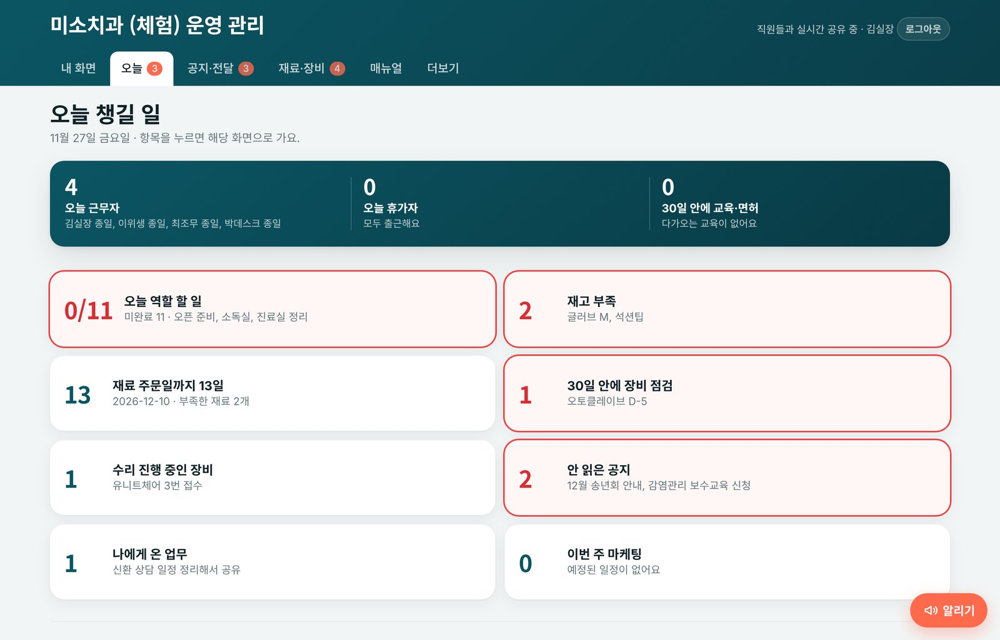
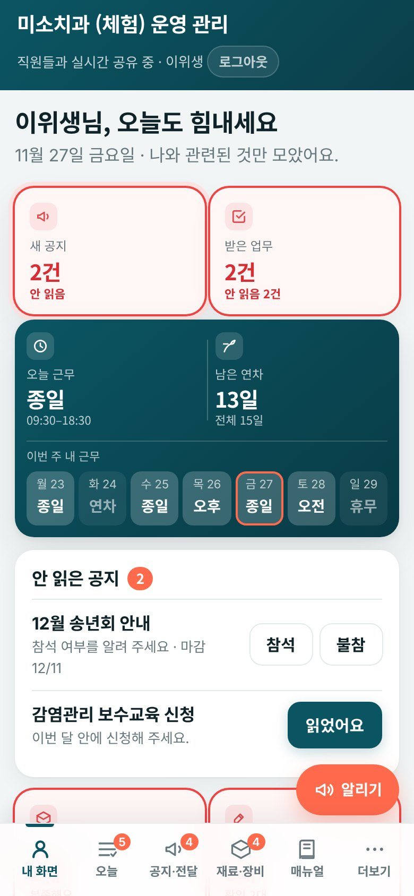
직원 5~10명 치과의 업무는 대부분 단톡방, 종이 체크리스트, 말로 굴러가요. 그래서 빠지고, 묻히고, 같은 질문이 반복돼요.
로그인하면 각 직원에게 자기 화면이 먼저 떠요. 다른 메뉴를 돌아다니지 않아도 오늘 할 일이 다 보여요.
내 화면 위쪽
아직 읽지 않은 공지와 나에게 온 업무가 빨간 테두리로 표시돼요. 읽으면 테두리가 사라져서 무엇을 확인했는지 한눈에 구분돼요.
오늘 근무 시간, 남은 연차 일수, 이번 주 7일 근무가 한 묶음으로 보여요. 연차는 입사일(재계약일) 기준 1년 단위로 자동 계산돼요.
내가 맡은 구역에서 부족한 재료, 점검일이 다가온 장비만 골라서 보여 줘요. [점검 완료] 버튼 한 번이면 다음 점검일이 자동으로 잡혀요.
나에게 맡겨진 역할(예: 소독실, 오픈 준비)의 체크리스트가 바로 떠요. [완료]만 누르면 돼요.
휴진, 연차, 회의, 학회가 7일로 보이고, [월별 일정]으로 넘어가면 3개월치를 볼 수 있어요.
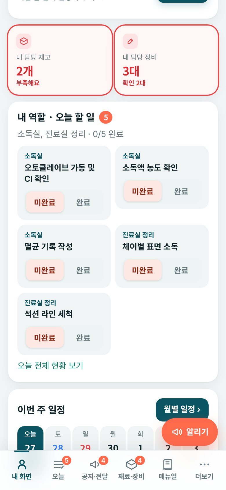
아래로 내리면 역할 체크리스트
원장님·실장님은 오늘 탭에서 치과 전체 상황을 한 번에 봐요. 누가 근무하는지, 무엇이 부족한지, 무엇이 밀렸는지가 숫자로 보여요.
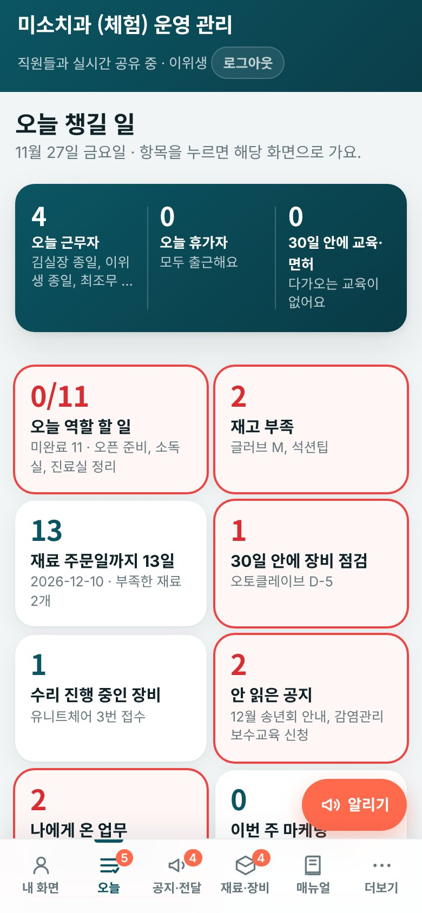
오늘 챙길 일
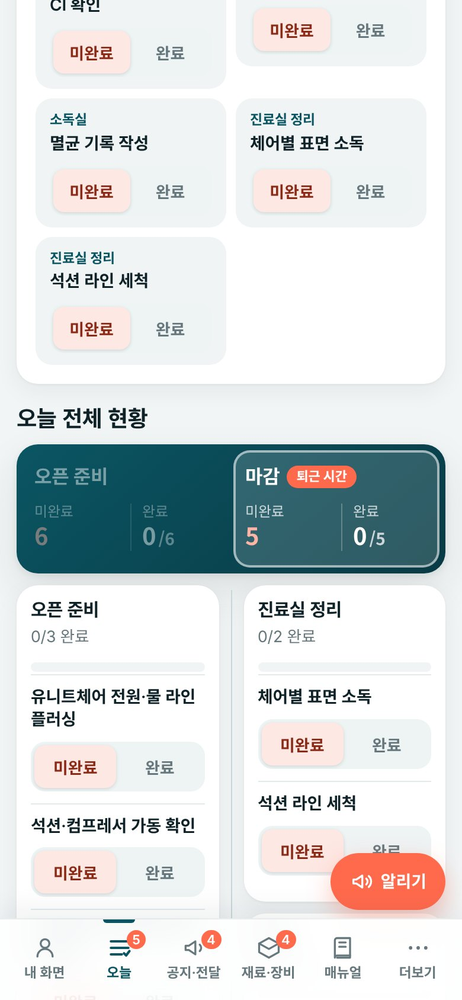
오픈 준비 · 마감 현황
오늘 근무자·휴가자, 30일 안에 만료되는 교육·면허, 재고 부족, 다가오는 장비 점검, 안 읽은 공지가 칸마다 숫자로 나와요. 칸을 누르면 해당 화면으로 바로 가요.
역할별 할 일을 오픈 준비와 마감으로 나눠 미완료·완료 개수를 보여 줘요. 오전에는 오픈 준비가, 오후에는 마감이 진하게 강조돼요.
역할은 정해 두지만, 체크는 누구나 할 수 있어요. 담당자가 오프인 날에도 다른 직원이 대신 체크하면 돼요.
"[월] BI 검사", "[토] 석션 필터 청소"처럼 적으면 그 요일에만 체크리스트에 나타나요.
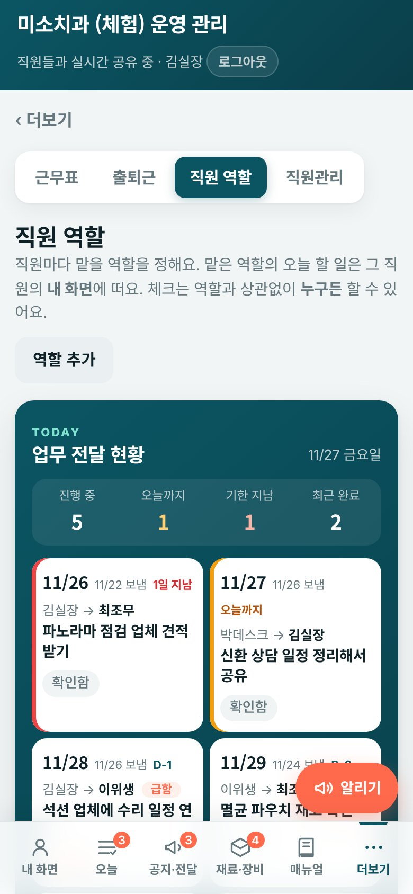
직원 역할 · TODAY 업무 전달 현황
직원 이름을 눌러 역할을 맡기고 뺄 수 있어요. 처음에는 [예시 역할 불러오기]로 오픈 준비·소독실·진료실 정리·마감 4개를 넣고 고쳐 쓰면 돼요.
직원끼리 주고받은 업무가 날짜별로 정리돼요. 누가 → 누구에게, 언제까지, 무엇을, 그리고 전달됨 → 확인함 → 완료까지 진행 상황이 보여요.
공지, 다가오는 일정, 업무 전달, 지난 알림이 한 페이지에 모여 있어요. 잡담에 묻히지 않고, 누가 읽고 무엇을 했는지 남아요.
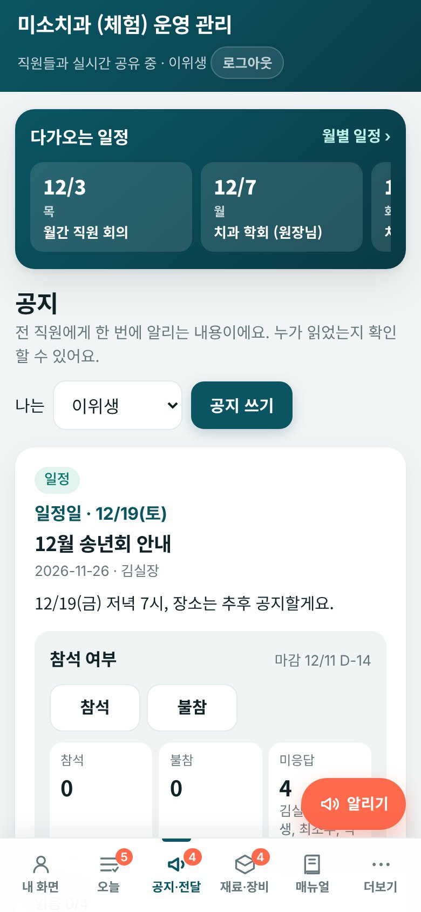
공지와 참석 여부
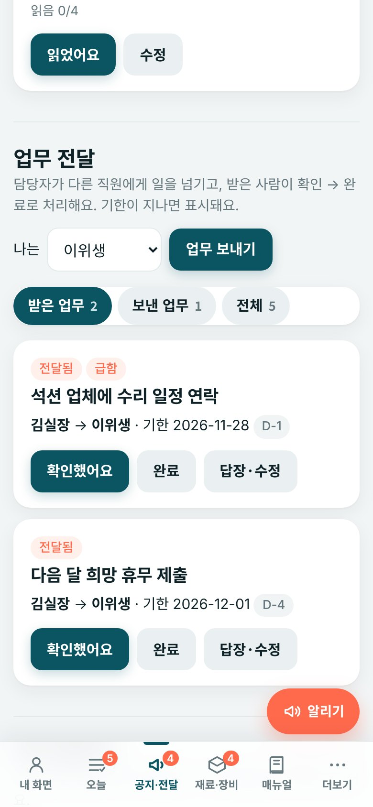
업무 전달
공지·일정·규정·지침으로 나눠 올리고, 중요한 공지는 위에 고정해요. 누가 읽었는지 이름으로 보여요.
송년회·회의 같은 일정 공지에만 참석 여부 버튼이 붙어요. 마감일과 참석·불참·미응답 인원이 자동으로 정리돼요. 일정은 월별 일정 달력에도 자동으로 들어가요.
"석션 업체에 수리 일정 연락 · 기한 11/28"처럼 받는 사람과 기한을 정해 보내요. 받은 사람은 [확인했어요] → [완료]를 누르고, 보낸 사람은 진행 상황을 바로 봐요.
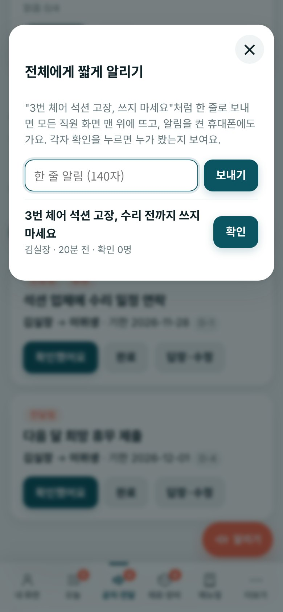
[알리기] 버튼 → 팝업
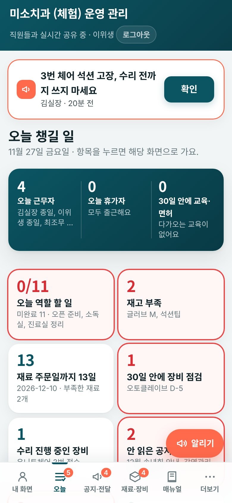
모든 직원 화면 맨 위에 표시
"3번 체어 석션 고장, 쓰지 마세요"처럼 급한 한 줄은 오른쪽 아래 [알리기]로 보내요. 모든 직원 화면 맨 위에 뜨고, 알림을 켠 휴대폰에도 가요.
각자 [확인]을 누르면 "확인 3명: 김실장, 이위생…"처럼 이름이 남아요.
보낸 알림은 모두 쌓여서 공지·전달 페이지 아래에서 검색하고 다시 볼 수 있어요.
엑셀 근무표, 출근부, 연차 계산, 달력을 하나로 묶었어요.
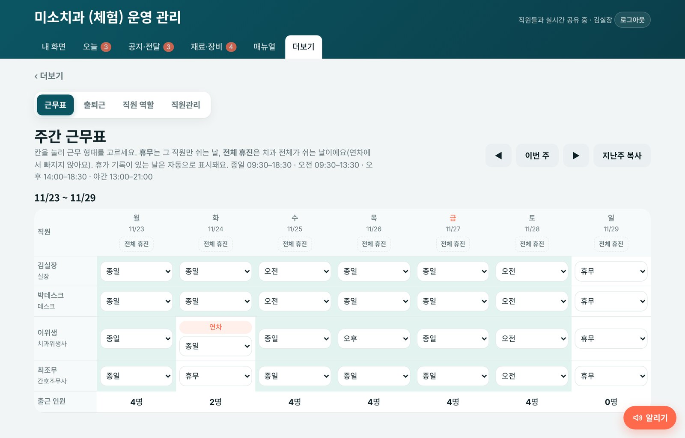
주간 근무표 (PC 화면)
칸을 눌러 종일·오전·오후·야간·휴무를 골라요. 근무 시간은 우리 치과 진료 시간에 맞춰 정해지고, 연차가 있는 날은 자동으로 표시돼요. [지난주 복사]로 매주 반복 입력을 줄여요.
관리자가 날짜 위 [전체 휴진]을 누르면 치과 전체가 쉬는 날로 표시돼요. 직원 연차에서는 빠지지 않아요.
치과 와이파이에 연결된 휴대폰으로만 출근을 찍을 수 있어요(설정 시 앱을 열면 자동 출근). 퇴근은 어디서나 가능하고, 치과 밖에서 찍은 퇴근은 관리자에게만 표시돼요. 지각도 자동 표시돼요.
입사일(재계약일)부터 1년 단위로 연차를 합산해요. 직원이 스스로 휴가를 등록하고 남은 연차를 확인해요.
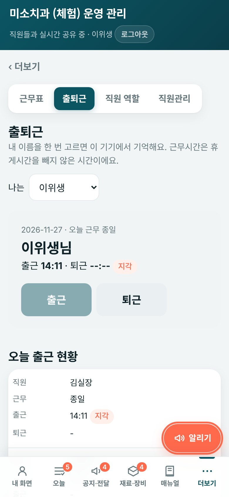
출퇴근
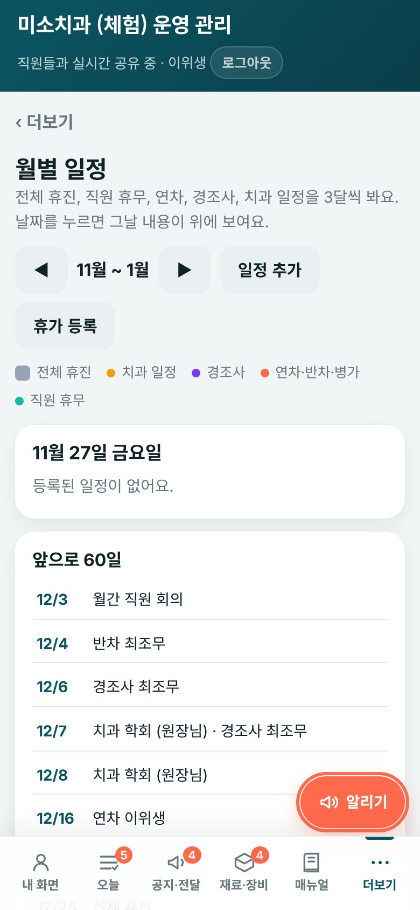
월별 일정 (3개월)
처음 2주는 공지·근무표·역할만 쓰고, 익숙해지면 재료·장비를 켜요. 입력은 담당자만 하면 돼요.
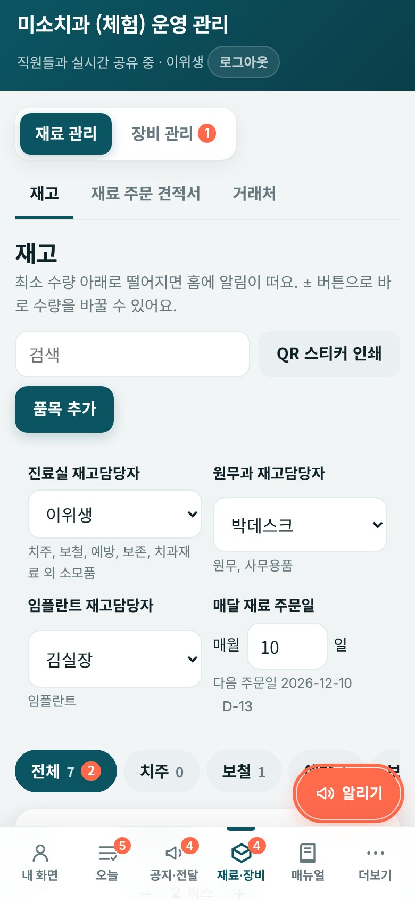
재고 · 구역별 담당자
재료마다 최소 수량을 정하면 그 아래로 떨어질 때 재고 부족으로 표시되고 담당자에게 알려요. 진료실·원무과 등 구역별로 담당자를 정할 수 있어요.
재료 선반에 QR 스티커를 붙여 두면, 휴대폰으로 찍고 [−1]만 눌러 사용량을 기록해요.
[이번 달 견적서 만들기]를 누르면 지금 부족한 재료가 구역별로 자동으로 들어가요. 수량·단가를 확인하고 엑셀로 내려받아 거래처에 보내요.
재료업체·장비업체·기공소 연락처, 주문 방법(카톡·문자·사이트), 결제 조건을 한곳에 모아요.
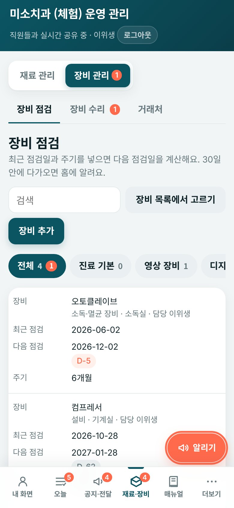
장비 점검
오토클레이브, 컴프레서, 석션, 엑스레이 등 장비마다 점검 주기(예: 6개월)를 넣으면 다음 점검일이 자동으로 계산돼요. 30일 안에 다가오면 오늘 화면과 담당자 화면에 표시돼요.
고장이 나면 [고장 신고]로 바로 수리 건을 만들고, 업체 연락·수리 완료까지 기록이 남아요.
신입이 와도 매뉴얼을 보며 스스로 익히고, 처음 셋팅은 원장님·실장님이 10분 안에 끝낼 수 있게 만들었어요.
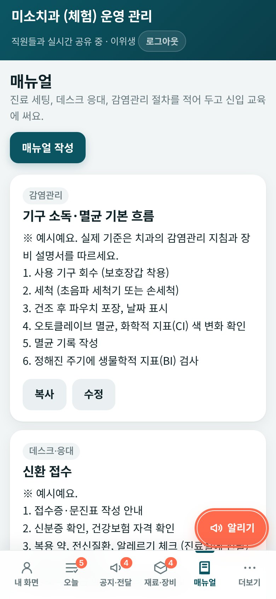
매뉴얼
진료 세팅, 데스크·응대, 감염관리, 응급 상황, 행정으로 나눠 적어 두고 모든 직원이 휴대폰으로 봐요. 내용은 누구나 쉽게 고칠 수 있어요.
오픈 준비, 마감, 기구 소독·멸균 흐름, 전화 응대, 신환 접수, 재료 주문, 신입 첫 주 교육, 응급 상황 대응. 불러와서 우리 치과 방식으로 고쳐 쓰면 돼요.
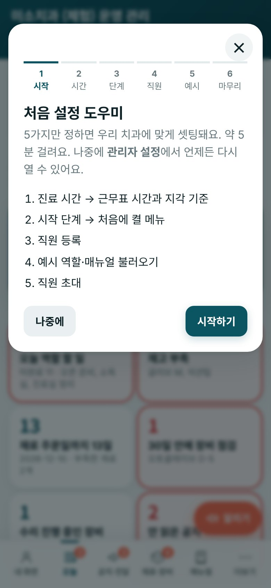
시작
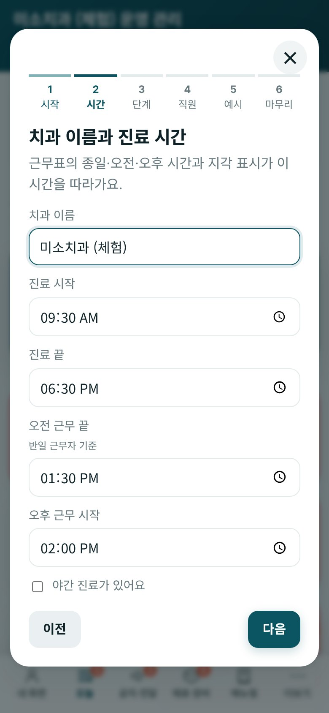
진료 시간
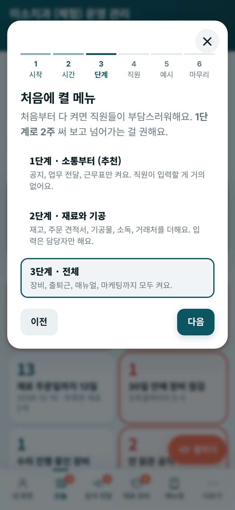
시작 단계
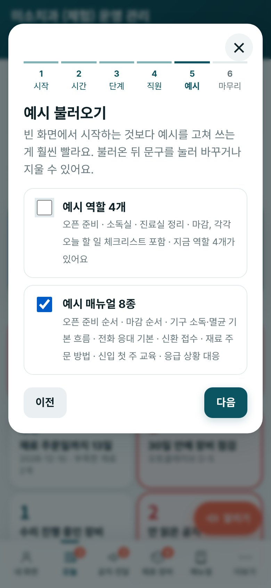
예시 불러오기
관리자가 처음 로그인하면 화면 맨 위에 도우미가 떠요. ① 진료 시간 → 근무표 시간과 지각 기준 ② 처음 켤 메뉴 단계 ③ 직원 등록 ④ 예시 역할·매뉴얼 불러오기 ⑤ 직원 초대 문구 복사. 나중에 언제든 다시 열어 고칠 수 있어요.
직원 정보가 들어가는 앱이라 보안을 가장 먼저 설계했어요.
| 항목 | 어떻게 지키나요 |
|---|---|
| 로그인 | 직원 각자 본인 카카오 계정으로 로그인해요. 비밀번호를 따로 만들 필요가 없어요. |
| 합류 승인 | 초대코드로 합류 신청 → 관리자가 승인해야 들어올 수 있어요. 퇴사자는 [내보내기] 한 번으로 막아요. |
| 치과별 분리 | 데이터베이스에서 치과마다 기록이 분리돼 있어서, 다른 치과는 우리 치과 기록을 볼 수 없어요. 운영자도 치과 기록 내용은 볼 수 없어요. |
| 원장님 전용 정보 | 근무 형태, 계약 만료일, 급여, 계좌, 주소, 비상연락처, 메모, 첨부 서류는 원장님만 보고 고쳐요. 총괄실장·실장도 볼 수 없어요. 원장 직급은 원장님만 바꿀 수 있어요. |
| 권한 변경 | 직급(권한)은 관리자만 바꿀 수 있고, 직원이 스스로 올릴 수 없어요. 마지막 관리자는 내려갈 수 없게 막혀 있어요. |
| 환자 정보 | 환자 이름을 저장하지 않아요. 진료·청구 정보는 기존 프로그램에 그대로 두세요. |
| 삭제 권한 | 공지·업무·알림은 쓴 사람만 지울 수 있어요. |
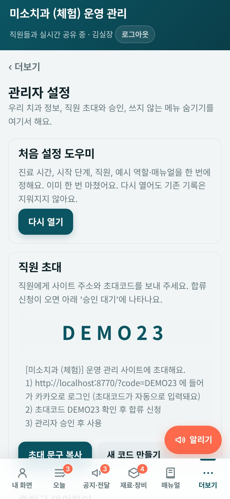
관리자 설정 · 직원 초대
| 구분 | 직급 | 할 수 있는 일 |
|---|---|---|
| 관리자 | 원장 · 총괄실장 · 실장 (인원 제한 없음) | 직원 승인·내보내기, 역할 배정, 전체 휴진, 메뉴 켜고 끄기, 와이파이 출퇴근 설정 (원장님은 여기에 더해 직원 계약·급여 등 원장님 전용 정보) |
| 직원 | 팀장 · 사원 (인원 제한 없음) | 공지 읽기·쓰기, 업무 주고받기, 체크리스트, 근무표·휴가 확인, 출퇴근, 재고·장비 기록 |
함께 써 보면서 더 좋은 앱으로 다듬어 갈 시범 치과 8곳을 모집해요.
| 모집 대상 | 직원 5~10명 규모의 치과 (원장님 포함). 카카오 단톡방으로 업무를 주고받는 치과라면 효과 보장! |
|---|---|
| 모집 수 | 8곳 (선착순) |
| 시범 기간 | 1년 무료 (시범 치과 8곳 한정) |
| 이후 사용료 | 1년 뒤 계속 쓰시고, 소개한 치과가 가입하면 1년씩 무료 기한을 연장해 드려요. 그 외에는 월 5,000원(직원 수 5~10명 규모)이고, 대형 치과는 협의해요. 종료 한 달 전에 미리 안내드리고, 원하지 않으면 종료합니다. 그동안의 기록은 내려받아 드립니다. |
| 유료 전환 혜택 | 우리 치과에 맞춘 업무 매뉴얼을 정리해 앱에 넣어 드려요. |
| 준비물 | 직원 각자의 카카오톡 계정, 휴대폰 또는 PC. 별도 설치·장비는 필요 없어요. |
| 부탁드리는 것 | 실제로 꾸준히 사용해 주시고, 특히 1년 동안은 앱 안의 [의견 보내기]나 통화로 불편한 점을 알려 주세요. |
Q. 청구 프로그램을 바꿔야 하나요?
아니요. 진료·청구는 지금 쓰시는 프로그램 그대로이고, 이 앱은 직원·운영 업무만 맡아요.
Q. 나이 많은 직원도 쓸 수 있을까요?
카카오 로그인 후 내 화면에서 버튼만 누르면 돼요. 처음에는 공지·근무표·역할 3가지만 켜서 시작해요.
Q. 퇴근 후에도 알림이 오나요?
휴대폰 알림은 직원이 직접 켜고 끌 수 있고, 종류별(공지, 나에게 온 업무, 근무표 변경 등)로 고를 수 있어요.
Q. 데이터는 어디에 저장되나요?
보안이 적용된 클라우드 데이터베이스에 치과별로 분리 저장돼요. 다른 치과와 운영자는 내용을 볼 수 없어요.